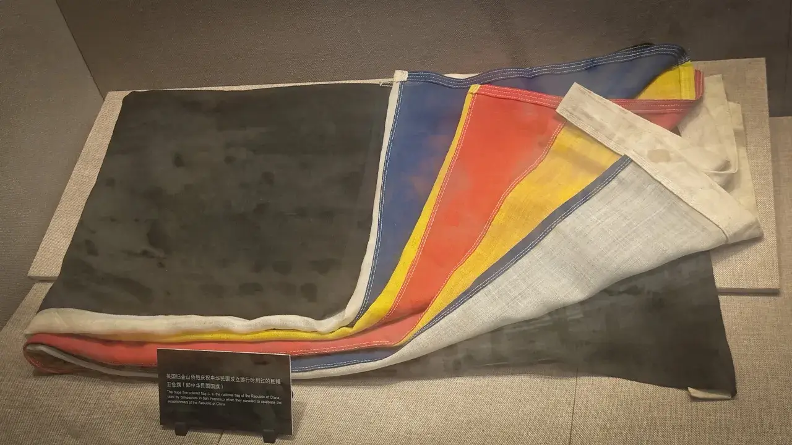
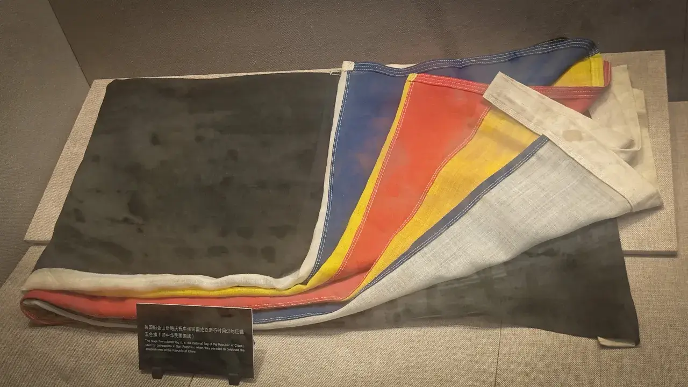

前言
这天是 7.14。这天打算上午去看看黄埔军校，下午看看沙面，结束广东之行。
本来计划还想去广东省博物馆的，不过据说广东这个地方没啥历史，再加上看的博物馆有点多，有点审美疲劳了。时间有限，下次一定🤧。
正文
1-长洲岛
黄埔军校是当年孙中山创办的学校，他划了个长洲岛作为黄埔军校的建校点，离市中心好远😅。最佳方案是坐地铁去长洲站下车，但是想体验一下坐船的感觉，遂广州东站- 1 号线-体育西路-3 号线-珠江新城- 5 号线-鱼珠站，￥5。
07:44 鱼珠码头

从鱼珠站出来还要走个将近一公里路才能到鱼珠码头。这个鱼珠轮渡也是公交的一种，S10 鱼珠码头-长洲码头，￥2。还可以骑电瓶车上船。感觉性质跟从武昌到汉口差不多。
07:46 日游珠江

你是否能找到上图中的广州塔呢？
07:49 准备上岛！

长洲岛即使在如今，也是军区，周围停了很多军舰，按规定是不可以拍照的🫣。
下船，找了个共享单车骑一骑。这边时间没有控制好，自己生物钟太早了 + 避开早高峰导致很早就到了黄埔军校门口，但是黄埔军校 9:00 才开门，我不太想等，就又骑车去了找了一个地标——北伐纪念碑。
08:18 北伐纪念碑
然后就是本次广东之行最大人在囧途了😭。看导航讲从黄埔军校骑到北伐纪念碑只有蛐蛐 1.9km，但是导航中却没有体现路程中的 Z 轴，最后骑车爬了好多很陡峭的山，有几座山峰还骑不动，下来推车😭。
北伐纪念碑旁边也没啥路标，然后我顺着某个下坡直接骑过了，死路一条。然后我就想放弃这个地标了，直接骑回黄埔军校算了。

然后就在骑回的过程中看到了路边的北伐纪念碑……还行，不算白跑一趟😅。
北伐纪念碑
一九二八年为纪念黄埔军校学生出身北伐阵亡将校而建，碑上刻有姓名此碑座落于济深公园遗址内，一九八四年重修~~（因为文革期间被毁了）~~。

很遗憾，我对北伐战争的这段历史并不是太了解🫣。大概就是清朝覆灭，各路军阀混战，国民革命军从广州起兵，一路北伐，建立南京政府，克北京，最后张学良东北易帜，名义上统一了全国。
08:39 中山公园

中国民主主义的先驱、中华民国的创始人孙中山先生与 1924 年 6 月 16 日，在黄埔长洲岛创办了“陆军军官学校”，即黄埔军校，培养了大批军事政治干部，对中国革命事业做出了重大贡献。塑此铜像，以志纪念。
黄埔区人民政府
二〇〇三年六月
整个长洲岛两个地方比较有名：一是黄埔军校，二是辛亥革命纪念馆。都是 9:00 开门，辛亥革命纪念馆旁边有个中山公园可以杀一杀时间，所以我决定调整行程，先辛亥革命纪念馆再黄埔军校。
中山公园就是个公园，还能看到很多广场舞大妈。旁边还有个自动贩卖机，想去消费一下，结果没联网，消费失败😅。
2-辛亥革命纪念馆
08:53 南门

刚刚骑车满身臭汗，时间也杀得差不多了，我歇一歇。
09:01 我进门了！

这是一个广东之行中人最少的景点……很遗憾，我对于辛亥革命的了解没有鸦片战争那么多。
我想对于辛亥革命事件，武汉的辛亥革命纪念馆应该要比这个馆更大一些。
孙中山
黄兴
宋教仁
廖仲恺
朱执信
章炳麟
蔡元培
秋瑾
蒋翊武
陆皓东
邹容
这幅排版经多次检查，人名和雕像（应该）是对的上的
这个纪念馆有两个展馆：《开辟共和新纪元——辛亥革命主题展》和《辛亥革命时期的广东名人展》。我选择先上二楼看辛亥革命主题展。
二楼前面有一个大斜坡，坡上有着那个时期各个革命人士的雕像，一路走来，最后走到辛亥革命的领导者孙中山先生面前。
09:06 开辟共和新纪元
19 世纪末 20 世纪初，在孙中山的组织和领导下，中华大地掀起了一场具有划时代意义的辛亥革命。它推翻清王朝的反动统治，结束了统治中国两千多年的封建君主专制制度，创立中华民国。这是 20 世纪中国第一次历史性巨变，是在中国建立共和制度的第一次尝试。它开创了完全意义上的近代民族民主革命，是中国人民为改变自己命运而奋起抗争的伟大里程碑。 自此之后，民主共和思想逐渐深入人心，它使帝制复辟流产，使军阀专制短命，使反动统治秩序再也无法稳定下来，它激励着中国人民为争取民族独立和人民解放、实现国家富强而更加勇敢地奋斗。
09:07 晚清民族危机

只要是介绍近代史有关的展馆，都要先骂一骂清朝🥴。
19 世纪末，随着中国在甲午战争中战败，帝国主义列强对中国的侵略愈演愈烈，进而掀起了瓜分中国的狂潮，中国面临着被“鲸吞蚕食、瓜分豆剖”、亡国灭种的严重民族危机。而统治中国的清朝政府和封建地主阶级，腐败黑暗，对内进行着残酷的奴役、剥削和镇压，对外则屈服于帝国主义，成为帝国主义压迫中国人民的工具。中国彻底沦为半殖民地半封建社会，中国人民处在帝国主义和封建主义双重压迫下，水深火热，苦难重重。
这就是大清！对外软中华，对内硬中华！
清朝末年，胡搞瞎搞😠。
在清朝实际最高权力者老佛爷的带领下……
乱七八糟！

望门投止思张俭，忍死须臾待杜根。
我自横刀向天笑，去留肝胆两昆仑。
——谭嗣同
一些中国人开始寻找救亡图存之路！但是许多运动大都牵扯了太多统治阶级的利益，困难重重，最终失败😭。
09:12 甲午战后的空前变局
甲午战后的晚清社会，时危国难，大厦将倾，彻底激发了中国人民救亡图存的危机意识和变局意识。为在家国危难中求得现代化的可能，变法革新、实业救国、教育救国等思潮层出不穷。它们都是近代中国人向西方学习的结果。正是各种救国方案纷呈，从而汇成近代中国的救亡大潮，构成了中国现代化进程的多元格局。与此同时，清政府面对庚子事变以后的社会危机和日益迫近的革命，不得不下诏变法，实施自上而下、带有明中国社显自我挽救性质的“新政”会处于空前的变局之中。

09:09 社会动荡与清政府的新政
经过义和团运动和八国联军占领北京的冲击，清政府已处于风雨飘摇之中政治败坏、军备废弛、经济凋敝，各地人民自发的反抗斗争接连不断，清王朝的封建统治难以为继。在内外压力之下，为了维护封建统治，清政府对内被迫进行政治、经济、军事等改革，史称“新政”对外则更加屈从外国侵略者。这次迟到的改革，非但未能巩固自身的统治，反而动摇了清王朝的社会政治秩序。
创办新式陆军！
“奉天承运、皇帝诏曰：洋人欺我太甚，竟至国之将亡，与其苟且图存，贻羞万古，何若大张挞伐、一决雌雄。朕，今日庄严宣誓，开战！”
慈禧太后霸气宣战😠！然后就没有然后了😭。
随后大清实施了一次清末新政，据说改革力度比之前都要大喔！
网上查了下居然没有“直隶陆军学堂”这个说法……根据毕业证书上的时间判断应该是保定军校的前身之一。

清末新政包含赴日留学的政策！鲁迅成为了赴日留学生群体之一。
这么看清末新政对历史的发展还是很有积极的意义，但是对大清来说，一些措施让一些中国人不再那么“愚昧”，后来这些人反而成为了推翻大清力量的重要组成部分🤔刁民还是愚昧一点比较好。
1903 年 10 月，清政府颁布《奖励游学毕业生章程》，规定凡中国留日学生在日本普通中学 5 年毕业，得优等文凭者，给予拔贡出身；在日本文部省直辖之各高等院校及程度相当的各项实业学校 3 年毕业，得优等文凭者，给予举人出身；在大学专科某科或数科，毕业后有选科或普通毕业文凭者，给予进士出身；在国立大学及程度相当的官立学堂中 3 年毕业，得学士文凭者，给予翰林出身；5 年毕业，得博士文凭者，除给予翰林出身外，这给予翰林升阶。最初，在洋务运动期间的留学生计划大都留学英美法等国家，不过，由于庚子赔款后政府财政紧绌，结果清末改革中的留学生计划大都留学日本。至 1907 年，留日学生总数达一万五千人。
09:14 革命运动的蓬勃发展
19 世纪末，当越来越多的人希冀通过改良的方式拯救中国于危亡之时，以孙中山为首的革命先行者开始了革命救国的伟大尝试，致力于宣传革命思想，发展革命组织，积极开展反清武装斗争。到 20 世纪初，尤其是同盟会成立后，革命运动的发展形势一日千里，革命救国逐渐成为时代的主旋律，以孙中山、黄兴等人为代表的革命派也最终成为社会变革的主流力量，在中国大地上掀起了一场轰轰烈烈的反抗清王朝统治，挽救民族危亡的民主革命运动。
09:16 孙中山与革命思想的传播
在近代中国人向西方寻求救国救民真理的漫长历程中，孙中山率先举起民主革命的大旗。进入 20 世纪，革命救国的道路为越来越多的人所接受，涌现了以黄兴、宋教仁、蔡元培、章炳麟、邹容、陈天华等为代表的革命思想宣传家和政治活动家。在他们的宣传、推动和组织之下，先后成立了兴中会、华兴会、科学补习所、光复会等一批革命团体，标志着中国革命派形成。中国革命从此有了自己的领导力量和中坚力量。

有人要开始造反了！
造反也得讲究方法，单纯地瞎胡闹可不能获得其他人的支持。孙中山在檀香山成立中国有史以来第一个现代革命团体兴中会！
之后就开始各种闹事了。
乙未广州起义
1895 年（旧历乙末年）8 月 29 日，孙中山在香港召开紧急会议，决定 10 月 26 日在广州反动首次武装起义，并制定了详细的起义计划。后因起义事泄失败，陆皓东等人牺牲。这是孙中山策划的第一次反清武装起义，虽然最终失败，但意义重大。
在武昌起义以前，就发生过很多次起义事件，都被大清镇压了下去🫥。所以辛亥革命能够造反成功并没有那么简单！
起义失败，孙中山走澳门小道成功跑路！

惠州起义
1900 年夏秋间，孙中山利用北方义和团运动之机，以兴中会成员为骨干，联合会党和绿林，在惠州组织反清起义，打响武装推翻清政府腐朽统治的第一枪。

1905 年 11 月，清政府通过日本当局颁布《清国留日学生取缔规则》，对留日爱国学生高涨的革命活动横加限制。12 月 8 日，为唤醒国人，激励留日学生，陈天华留下绝命书后投海自尽，时年 30 岁。
emmmm 这个《清国留日学生取缔规则》的主谋可能是日本而不是大清……
09:20 同盟会的成立和发展
1905 年 8 月，随着民主革命思想的广泛传播和国内革命形势的迅速发展，中国第一个具有民主革命政党性质的政治组织——同盟会正式成立，标志着近代民族民主革命正式发端。同盟会成立后，会员和革命党人积极创办革命报刊，广泛宣传革命，组织不断发展壮大，并迅速成为领导全国革命运动的中心。

孙中山在革命党中的威望越来越高，在日本创办了更大的革命组织——同盟会！
展馆里没有介绍同盟会的革命纲领：“驱除鞑虏，恢复中华，创立民国，平均地权”……估计是觉得这个口号不利于民族团结吧😵。
09:21 革命党与维新派的思想交锋
以孙中山为首的革命派和以康有为、梁启超为首的维新派，虽然根本目标都是为了挽救民族危机，使中国走上近代化的发展道路，但主张和方法迥异，两者思想交锋由来已久。同盟会成立后，革命党人与维新派又分别以《民报》与《新民丛报》为主要阵地，就中国要不要革命、要不要推翻清政府、要不要民主共和政体替代君主专制政体等问题，进行了一场大论战。论战使民主革命思想得到了更广泛的传播，使革命运动迅速走向高潮。
维新派觉得大清还能一治。革命派觉得大清没救了，建议直接推翻。
09:22 革命党领导的武装起义
同盟会成立后，在努力发展组织机构，进行民主革命思想宣传的同时，坚定地走上了武装起义的反清道路。以孙中山为首的革命派，先后组织了十余次武装起义，有力地打击和动摇了清朝的统治基础，促成了全国革命高潮的到来。
革命是要流血的。继续造反，继续失败，继续造反，继续失败……
萍浏醴起义
1906 年 12 月 3 日，哥老会会众 3 万余人在龚春台的领导下，于江西萍乡、湖南浏阳和醴陵一带发动起义，次年 1 月中旬失败。同盟会会员刘道一、蔡绍南参与了起义的谋划，在起义中被捕遇害，孙中山称此为“同盟会员之第一次流血”。
潮州黄冈起义
1907 年 5 月 22 日，潮州饶平县黄冈三合会会众在首领、同盟会员陈涌波、余丑、余通等领导下，发动起义，攻占黄冈等地，成立军政府，推陈涌波、余丑为正、副提督。起义军与清军激战 27 日，后因寡不敌众而失败。

惠州七女湖起义
1907 年 6 月 2 日，同盟会会员邓子瑜奉孙中山之命，从新加坡回国，在惠州七女湖发动起义，攻占泰尾、三连、柏塘等圩镇，与清军激战十余日，孤立无援而失败。
钦州防城起义
1907 年夏，孙中山委派同盟会员王和顺为“中华国民军南军都督”，前往广东钦州（今属广西）等地联络抗捐群众，策划起义。9 月 1 日，王和顺率 200 余人钦州王光山起义，迅速占领防城。随后，义军转战十余日而失败。

皖浙起义
1907 年 7 月，光复会会员徐锡麟、秋瑾，联合当地会党在安庆、绍兴两地发动武装起义。事败后，徐锡麟、秋瑾被捕遇害。两人在被捕后大义凛然，视死如归，表现出了崇高的革命气节。
钦廉上思起义
1908 年 3 月 27 日，黄兴率由旅越华侨组成的“中华国民军南军”200 余人，由越南出发，进攻钦州，转战于钦州、廉州（今属广西）、上思之间，所向披靡。后因弹尽粮绝退回越南。
云南河口起义
1908 年 4 月 30 日，黄明堂、王和顺等奉孙中山之命，率部开赴云南，进攻河口，并成立云贵都督府。与清军相持 20 余日后失败，退回越南。
安庆马炮营起义
1908 年 11 月 19 日晚，岳王会成员熊成基率安庆新军马、炮两营起义，并得到了步兵营的响应，马、炮、步三营会攻安庆。20 日，起义军因内外受敌后突围出走，起义失败。
广州庚戌新军起义
同盟会在西南边境发动的一系列起义失败后，转而运动新军。1910 年 2 月 12 日，在中国同盟会南方支部策划下，同盟会会员倪映典率驻广州燕塘的新军 3000 余人起义，遭遇清军水师提督李准镇压，死难和被捕者达 300 多人，起义失败。
09:25 黄花岗起义
黄花岗起义
1911 年 4 月 27 日（农历三月廿九日），在孙中山、黄兴等人的领导下，同盟会在广州举行武装起义。黄兴率选锋队攻入两广总督衙门。起义军与清军激战一夜，因敌众我寡，被迫退却，骨干会员牺牲百余人。黄花岗起义是武昌起义前，同盟会发动的投入人力、物力、财力最大，也是规模最大的一次武装起义。起义虽然失败，但沉重打击了清朝统治，加速了革命发展的进程，促成了武昌起义的爆发和胜利。

这是辛亥革命前闹得比较大的一次了。

是役也，碧血横飞，浩气四塞，草木为之含悲，风云因而变色，全国久蛰之人心，乃大兴奋。怨愤所积，如怒涛排壑，不可遏抑，不半载而武昌之大革命以成，则斯役之价值，直可惊天地、泣鬼神，与武昌革命之役并寿。
——孙文

在黄花岗七十二烈士中，除去广东籍外，剩下大都是福州籍的。
林觉民故居现在还在三坊七巷，上次去的时候没啥文化对林觉民没什么了解，哪天再抽空去看看🫥。三坊七巷还是很有内涵的，但现在这么多名人故居还不如一个屁股树，大多数人（比如我）还是没闲情去了解相关历史。
09:29 海外华侨对革命的支持
孙中山领导的近代民主革命，不仅在国内燃起了革命的火种，在海外亦赢得了各地华侨的同情、响应和支持。海外华侨不仅亲身投入民主革命洪流，回国效命决死，而且捐资、捐物，成为辛亥革命的强有力的支持者，被孙中山誉为“革命之母”。
孙中山在海外树立起足够的威望，筹集相应的资金和人员为革命事业出力。
同盟会在海外
中国同盟会成立后，先后在南洋、北美、欧洲等地设立分会或支部。到 1908 年，南洋地区设有同盟会分会和通讯处 100 余个。1910 年，美洲西部设有分会 15 个，“凡有华侨所到之处，几莫不有同盟会会员之足迹”华侨革命组织的纷纷建立，团结了华侨中的革命分子，培养了一批革命骨干，对支持国内的革命起了相当大的作用。
09:30 辛亥前夜的斗争风潮
在革命党人不断举行反清武装起义的同时，各种社会风潮、运动和斗争也此起彼伏。一方面，立宪派人士为尽快实现君主立宪的政治主张，组织和发起了立宪运动；另一方面，广大民众和爱国人士为谋求生存和争取应有的权利进行不屈不挠的斗争，与革命党人一起推动着中国民主革命运动不断高涨。
清末新政决定立宪！第一次议会结果出炉，半数为皇族宗室和满族人🤪，如此形式主义，使得许多人的立场由立宪转向了革命😠。
09:31 群众性的反抗斗争和爱国运动
20 世纪初的中国，民族灾难深重，农村经济残破，整个社会动荡不安。在革命党人不断举行反清武装起义的同时，全国各地人民自发的反抗斗争和爱国运动也此起彼伏，成为社会变革和进步的重要推动力量。
拒约反美运动
1905 年，为反对美国胁迫清政府续订限制华工赴美、驱逐在美华工的《中美会订华工条约》，广东、上海等地掀起了轰轰烈烈的拒约反美运动。
大明顺天国起义
1901 年 9 月，香港兴中会会员谢缵泰、李纪堂与洪全福联络会党，密谋在广州举行武装起义，定国号“大明顺天国”，经过一年多筹备，拟于 1903 年 1 月 28 日除夕夜在广州发难，但因事泄失败。
好家伙，太平天国还在藕断丝连……
抗暴抗捐风潮
清朝末年，由于全国许多地区灾害频仍，加上官府横征暴敛，人民负担沉重，群众自发的抗粮抗租、罢工罢市斗争持续不断，从而动摇了清王朝的统治基础。
保路运动风潮
1911 年清政府借铁路国有为名，将已归商办的川汉、粤汉铁路收回归国有：将路权卖给英、法、德、美四国，激起了粤、湘、鄂、川四省人民的强烈反对，一场声势浩大的保路运动兴起，尤其在四川地区，发展成为大规模的武装斗争从而点燃了辛亥武昌起义的导火索。
大清把武昌的兵调去四川镇压这件事了，武昌空虚！
09:33 辛亥革命高潮的到来
随着全国形势的不断发展，武装革命条件逐渐成熟。1911 年 10 月 10 日武昌起义爆发。武昌起义的胜利使革命烈火迅速燃遍神州大地，短短月余，湖南、陕西、江西、山西、广西、安徽、福建、广东、四川、贵州、浙江等 14 个省脱离清朝统治宣布独立，还有一些省份的革命党人与人民群众举行起义。清政府的封建统治逐渐土崩瓦解。

武昌起义
在经历了十数年的探索、酝酿和流血牺牲后，1911 年 10 月 10 日，在同盟会中部总会的直接推动和湖北文学社、共进会的共同组织下，武昌起义爆发，中华民国军政府鄂军都督府随即成立，并迅速取得了全省范围的胜利。面对清政府来势汹汹的重兵围剿，万余革命军将士以血肉之躯，血战 40 余天，捍卫了新生的革命政权。
辛亥革命事物
各省响应
武昌起义爆发后，全国各地闻风而动，起义烽火燃遍神州大地。湘、陕两省率先响应，有力地推动了各省的起义。两个月内，内地 14 省和上海一地，以武装起义或和平方式响应，宣布脱离清政府而独立。东三省及直、鲁、豫、新甘各省的起义虽未成功，但也壮大了革命的声势，加速了清王朝的崩溃。延续了 260 多年的清王朝终于走到了它的尽头。
遍地开花！
09:37 开创民主共和制度的新纪元
中华民国南京临时政府建立，是民主共和制度在中国的首次尝试。它颁布了近代中国第一部具有宪法性质的《中华民国临时约法》，确立建设现代国家的基本原则，制定共和国的政治体制，构建出现代国家的基本雏形，开辟了中国历史的新纪元。

革命军需要一个政府来指挥。出于孙中山在革命军中的威望，他于南京就职临时大总统！
中华民国南京临时政府的成立
随着各省相继宣布独立，建立统一的全国性的新政府提上了议事日程。经过各省代表的多次讨论，决定临时政府设在南京。1911 年 12 月 29 日，孙中山当选为中华民国第一任临时大总统。1912 年 1 月 1 日，孙中山在南京就任临时大总统，中华民国临时政府正式成立。
这一段有个走廊。休息一下，看看广州塔🤪。
 

建立中华民国！
中华民国成立了！
09:39 南北议和与临时政府的北迁
经过南北议和，1912 年 2 月 12 日，清帝退位，统治中国 260 多年的清王朝彻底覆灭。3 月 10 日，袁世凯在北京宣誓就任临时大总统。随后临时政府北迁南北在形式上得到了统一。
南北议和与清帝退位
1911 年 11 月 27 日，清军攻下汉阳，袁世凯请英使出面调停。12 月 3 日，南北双方停战，指派代表商讨国家大局。12 月 18 日，南北议和在上海正式开始。经过多次反复和议，孙中山允诺解职让位予袁世凯，通过了清帝退位的优待条件。1912 年 2 月 12 日，清帝退位。
武昌起义后大清还活着！大清选择派北洋军阀袁世凯收拾烂摊子（也只能选他了）。但此时大清已经管不住袁世凯了。
虽然南方各省都独立了，但是北方军事实力仍十分强大，北洋军阀还是太厉害了！革命军北伐困难重重，最后还是选择了折衷，南北议和。
孙中山解职与临时政府北迁
1912 年 4 月 1 日，孙中山正式解除临时大总统的职务。4 月 6 日，临时政府迁往北京。这标志着南京临时政府的结束，也意味着在南北的较量中，南方革命党人的失败。
大清无了！至此辛亥革命结束。
09:42 共和新气象
辛亥革命不仅是一次政治革命，也给中国带来了文化、思想诸方面的巨大变化。它以疾风骤雨般的方式指毁旧政权，建立新制度，促使中国社会转型在政治结构的转换上迈出关键的一步，使民主共和成为一种被大众认可的价值观念。同时，它又推动民主精神的高涨，加速经济和教育结构的转换和发展，带动社会文化的现代化转型，使中国的现代化事业向前迈进了一大步。
民主精神的高涨
辛亥革命打碎了文化专制的枷锁。在民国建立初期，政党政团蓬勃兴起；民众政治参与日益广泛；议会政治的探索。这些民主的新气象，是中国社会划时代的进步，是辛亥革命的重要成果。
创办实业热潮的掀起
辛亥革命后，政府实施一系列保护和鼓励实业发展的政策，促进了许多新式企业的创办，直接推动了工商业的发展；各类民间实业团体蓬勃兴起，形成空前高潮。振兴实业、建设民国、实现民生主义的理想为更多的人所接受，对中国经济近代化作了较为广泛的社会动员，为辛亥革命后中国资本主义发展“黄金时期”的出现奠定了良好的基础。
教育制度的变迁
民国时期教育呈现出明显的阶段性。从民国初年颁行的《壬子 · 癸丑学制》确立的教育宗旨，到五四运动以后学校教育的全面改革，都带有深深的时代烙印。经过长期酝酿，1922 年以大总统令的形式颁布了《学校系统改革案》（即“壬戌学制”）。新学制参考国内外学制的设置，综合了五四运动以来的教育成果，确立了“六三三”分段的新学制系统。

新生活！
辛亥革命以后，人们的生活方式发生了变化！
09:44 捍卫共和制度
辛亥革命使民主共和观念深入人心。民国初年，各派政治势力重新分化组合，虽然它们在政治立场和活动方式上均有差异，但大多对袁世凯抱有幻想，对民国前途表示乐观。然而袁世凯倒行逆施，变民主为专制，逆历史潮流而动，遭到国人的强烈反对。革命党人组织和发动了二次革命、护国运动、护法运动，虽屡遭挫折，但愈挫愈奋。
二次革命的爆发
袁世凯上台后极力推行集权政治。1913 年 3 月宋教仁被刺，暴露了袁世凯的真实面目。7 月，李烈钧在江西湖口发布讨袁檄文，宣布独立，二次革命爆发。这是民国以来南北第一次战争最后以袁世凯的胜利告终。国民党丧失了在南方的地盘与军队，革命转入低潮。
辛亥革命后，中国只是名义上处于统一状态，实际上南北双方依然矛盾重重。最终因宋教仁遇刺事件点燃了导火索，还是爆发了内战。
袁世凯复辟帝制与护国
以镇压二次革命为转折点，袁世凯着手建立个人的专制统治。他不仅在军事上很快取胜，而且在与国会的对抗中，打拉并用，步步紧逼，最终解散国会修改约法，基本摧毁了共和政制。随着袁世凯帝制活动的加剧和公开化，各种反袁势力汇合成为一场声势浩大的护国战争以挽救垂危的中华民国。
袁世凯胜利后，他他他飘了！然后就干了一件非常智熄的操作——称帝！权力还是太让人上瘾了🤑。

袁世凯称帝
1914 年 12 月底，袁世凯通过御用约法会议和参议院。炮制出《大总统选举法》，当上了“世袭大总统”此后，他通过恢复帝制时代的官秩名称；启用前清官吏；恢复封建官场礼仪；倡导祀孔祭天，制造恢复帝制的氛围，一步一步走向帝制。

滇系军阀
袁世凯的统治根基本来就不稳，各路军阀本来就心怀鬼胎，于是借此机会纷纷宣布独立。袁世凯众叛亲离下被迫退位，最后估计心里压力太大就 G 了😇。
于是，中国又陷入了军阀混战的吃鸡战场😇。
护国战争
在反对袁世凯帝制活动中起关键作用的是梁启超及其进步党，他们以云南为反袁基地，积极联络旧革命党人及地方实力派，形成一条反袁的联合阵线。1915 年 12 月，唐继尧、蔡锷、李烈钧等在云南宣布独立，并组建护国军讨袁。袁世凯军队受挫，南方各省纷纷独立。袁世凯在内外压迫下宣布取消帝制，并于数月后病逝。
09:47 护法斗争
袁世凯病逝后，段祺瑞控制的北京政府拒绝恢复《中华民国临时约法》和国会。为捍卫共和，孙中山联合南方军阀发起第一、第二次护法运动，但均告失败。在痛苦的反思中，孙中山认识到南北军阀如“一丘之貉”，一定要组建忠于革命的政党和军队。
“十八路诸侯讨董”，这些“诸侯”并不值得信任！于是孙中山决定组建军队。欲知后事如何，且看下一站——《黄埔军校》。
09:47 寻求新的救国道路
辛亥革命在推翻帝制，建立共和体制，给中国带来急剧的政治变动之时，并没有改变中国的社会基础。因此，在民主思潮方兴未艾之时，传统的尊孔思想依旧顽固地盘踞在不少民众的观念中，并随着袁世凯称帝和张勋复辟，发展成一股复古逆流。 在思想界，先觉者们在苦苦探求解救中国之路，他们认为：要在中国真正建立起共和制度，在政制建设的同时，还必须启发国民的政治意识，培养国民的独立人格，实现思想启蒙。
最右边的那个是阿 Q
存在了两千多年的封建制度被推翻了！但很多国人的封建思想却很难快速转变，依旧陈腐封建，这还真是一件麻烦事！
这就是新文化运动！
09:49 第一展馆结束
09:51 辛亥革命时期的广东名人展
这个展厅只介绍广东人，作为一个外省人就简单过一遍吧！这几个场景做的都是非常不错的！
可以看出广东作为沿海地区，清末时有很多“润佬”，因此非常适合作为“造反圣地”！


没有拍是哪个场景……
广东巾帼
自左到右依次是：张竹君、徐宗汉、卓国华、梁定会和严珊珊。


10:11 出！

终于出来了！（其实我并没有在馆里待太久时间，但是写博客的时候各种查资料，写到这里我已经累了🫠）
坐公交车（忘了是 383 路还是 430 路），在长洲路口下车，￥2。
3-黄埔军校
10:32 长洲炮台

没开。下一站。
10:48 粤菜品鉴时间

想着去黄埔军校的话午饭难以解决，遂决定在军校前面的一段路找了家煲仔饭，￥18。
等了好久终于上桌了，说明不是预制菜，好评！
虽然这个煲仔饭没有菜心，而是用白菜代替，但是这个烧腊味道很好（没文化的我没啥形容词）！比河北保定煮的好多了😇。
11:18 双皮奶

来试试顺德双皮奶，￥10。买完店家还很礼貌地说了句谢谢😇。
猪八戒吃人参果，我边走边吃走进了黄埔军校。
11:26 孙总理纪念碑
小小的孙总理雕像
园区大门并不是黄埔军校旧址的大门，然后我瞎逛😇。
11:33 黄埔军校俱乐部

黄埔军校俱乐部
历史保存得不错，保留了民国的国旗。
再往北走可以看到好多军舰，按规矩是不可以拍照的🫣。
11:40 孙中山先生故居
孙中山住过的地方
园区里划了好大一栋楼给孙中山住，不过据查，黄埔军校于 1924 年 6 月 16 日在广州成立，孙中山于 1925 年 3 月 12 日在北京逝世，他应该在这里并没有待太久的时间😇。
不愧是黄埔军校，连建筑都是黄的。
11:49 黄埔军校主体
这就是黄埔军校！

人太多了！感觉这个地方特别吸引小男孩。


对比一下
我仔细对比了一下黄埔军校和保定军校“陆军军官学校”的六个大字，发现竟是一模一样，看不出区别。
室内介绍黄埔军校的展厅，估计是有空调的缘故，人从众𠈌，下次一定。遂决定就参观一下军校走廊旁边的场景复原。

政治部负责校内师生、士兵及工侠的政治教育训练，设指导、编纂、秘书等股，后改为总务、宣传、党务科。戴季陶、邵元冲、周恩来、熊雄等先后担任主任。

这就是教室！
教室上的照片
自左到右，教室上还挂有廖仲恺、孙中山和蒋中正的照片，蒋光头的照片居然还给挂上了，确实挺帅的🤪。
这一左一右刚好还对应上了后来的国民党左派与右派。后来廖仲恺就被蒋光头干掉了（至少校长是重大嫌疑之一）😇。

这就是食堂！
看这个吃的很有沿海地区风味！

校长会客厅既是作为官长集合举行会议的场所，也是接待来宾的场所。黄埔军校自成立以后，接待了大量的外来参观团体，除安排参观校园设施外，还安排教官在此对访客进行教育宣讲活动。

校总理孙中山常到军校视察和演讲，有时太晚了便在军校过夜，翌晨才返回广州。这是他办公和小憩的地方。

秘书处为校长办公厅科室之一，负责全校教育训练的考察、审核，部队编制组织及调遣、演习、校阅作战计划，以及人员升降、任免、调补、铨衔、考绩及人事、典守印信、保管机密文件等事项。校长的中文秘书张家瑞、英文秘书王登云也在此办公。

1924 年 5 月，孙中山任命蒋中正为校长，此为校长办公和小憩之处。

军校成立之初设战术总教官一名，独立于六部之外，但与教授、教练二部关系密切，不仅与教授、教练二部主任同负责军事方面的学科、术科教育训练，并监督实施，分任全校勤务。


N 人大房间！

校长亲笔！

军校纪律产明，成立之切便颁布法令规范师生行为，并设禁闭室关行罪情较轻不入刑法范围的师生。最初还没有正规的禁闭室只是利用楼梯房下角落体临时禁闭室。
这就是军械库！
黄埔军校建校初期武器数量种类均较少，后经扣押商团武器、苏联援助等诸多途径，逐渐发展成为拥有多种先进武器且数量庞大的军事机构，为军事教学提供了便利，也成为其创下赫赫战功的重要因素。

撤！人实在是太多了，长洲岛都要被挤爆了😵！买了一盒西瓜果切，￥5，物价竟十分正常。最后坐了 430 路去长洲地铁站，等了老半天，only￥1。
长洲站-7 号线-汉庭长隆- 3 号线-体育西路- 1 号线-广州东站，￥6。34.9km！还好广州地铁发达。
回民宿洗个澡，躺一躺，下午去西边崇洋媚外一下作为本次广东之行的收尾。
4-圣心大教堂
15:36 老破小
圣心大教堂晚上不亮灯，只得下午去。广州东站-1 号线-东山口-6 号线-一德路，￥4。

穿过一阵老破小，真有小时候菜市场的味道啊！前往圣心大教堂！
这里的椰子好便宜，10 元钱 3 个，可惜吃不下，买不了🤧。
15:42 抵达

圣心大教堂说 7.15 闭馆检修，然而今天 7.14，真是太幸运了！
正门
室内还在做礼拜，要等礼拜做完才让进，不太想等，下次一定。然后就一阵乱拍呗！
这就是圣心大教堂！
查了下资料这个教堂是第二次鸦片战争后法国强迫大清在两广总督部堂遗址上建的。后来修修补补，风吹雨打，在“文革”的时候差点被砸成稀巴烂🫣，现在重新整修后成为了广州一大著名景点。所以，这个法国“佛狸祠”，应该主张保护还是主张废弃？
历史是一面镜子。以史为鉴，才能避免重蹈覆辙。对历史，我们要心怀敬畏、心怀良知。历史无法改变，但未来可以塑造。铭记历史，不是为了延续仇恨，而是要共同引以为戒。传承历史，不是为了纠结过去，而是要开创未来，让和平的薪火代代相传。
——2015 年 9 月 28 日，习在第七十届联合国大会一般性辩论时的讲话
说的有道理！
杂项
在这里可以看到很多老外，相比于北京，在广州还可以看到很多黑人😇。

下一站，沙面。
5-沙面
一德路-6 号线-黄沙，￥2。
来之前看天气预报都是一阵暴雨，之前十分幸运地出去玩的时候都没有下雨！可是在最后一天下午还是下起了暴雨🫣。

已经不记得从多少个地方看到广州塔了。

下了天桥，就是沙面岛！
一片洋楼建筑群，说实话去过汉口和天津，再看这里有点审美疲劳了🫠，再加上暴雨，就简单逛逛。
这里还有一些小西餐店，但是来了广州我只想吃粤菜，找了一家招牌卖肠粉的结果又说没有卖，感觉广州人不怎么喜欢做肠粉的样子。
沙面建筑群
6-珠江
16:43 下一站！

接下来按计划是粤海关大楼。从沙面出来看着就在不远处，遂决定直接沿江走过去。
16:45 人民桥

有点像天津跳水大爷的那个桥。
16:46 毋忘此日

沙基惨案
为声援上海五卅运动，香港、广州沙面工人于 1925 年 6 月 21 日纷纷离职返回广州。23 日，香港罢工工人和广州市的工人、农民、学生、青年军人及其他群众 10 万余人，在广州举行上海惨案追悼大会，会后举行游行示威。密集的游行队伍路过沙基时，突然遭到沙面租界英国军警的排枪射击，停泊在白鹅潭的英、法军舰也开炮轰击，造成示威群众惨重伤亡。据不完全统计，在这次事件中有 50 余人被打死，170 余人受重伤，轻伤不计其数。沙基惨案发生后，广州革命政府立即照会英、法等国提出抗议，并宣布同英国经济绝交，同时封锁出海口。
16:48 粤海关大楼
这就是粤海关大楼！
很有江汉关的味道🫣。
16:52 广东邮务管理局

现广州邮政博物馆。
17:15 粤菜品鉴时间
生滚鱼片粥和陈村粉
接下来是粤菜品鉴时间，最后一天了必须得在广州吃到肠粉😭！
一开始进了一家店，问了句有没有肠粉，店家说有，进去以后看菜单明明没有啊？结果才知道店家以为我说的是炒粉，寄！我的普通话被广东人嫌弃了😭！
然后又找了一家，终于点上肠粉了。结果付完钱后又说肠粉没了😠！我要吃一次肠粉这么难吗？店家说能不能用陈村粉代替。看上去应该差不多，好吧只得同意。
牛腩陈村粉￥20 + 生滚鱼片粥￥10 =￥30。我觉得这个陈村粉还没有河北保定的肠粉好吃😭！
17:46 解放大桥
这就是解放大桥！
挤地铁有点挤吐了，正好天晴，我觉得骑共享单车回民宿是一个不错的选择🤗！
这个广州解放大桥看起来跟福州解放大桥一模一样！福州解放大桥曾经也被刷成橙色过。
查了下广州解放桥还比福州解放桥建成更早，不过论地位肯定不如福州的解放桥😇。
17:53 海珠桥

广州的第一座过江大桥，海珠桥之于广州才相当于解放桥之于福州🤔。
但是这个桥的结构又让我觉得天津的解放桥很像。
17:56 广州塔

广州塔越来越近了。
18:07 林则徐纪念园
老乡好！
在广州也能看到著名两广总督林则徐！这么算来我已经是在第四个城市里看到林则徐雕像了😇。
18:40 天河区

本来是想从体育中心直接往北拐回民宿的，结果导航给我带到提前左转了😅。后面继续人在囧途，广州路上各种修路，喜提迷路。

广州天黑还挺晚的，时间还是没有控制好，再晚一点就可以看到广州塔亮灯了。不过还是想保存一下体力明天回家，遂直接回民宿躺尸，结束本次广东之行！